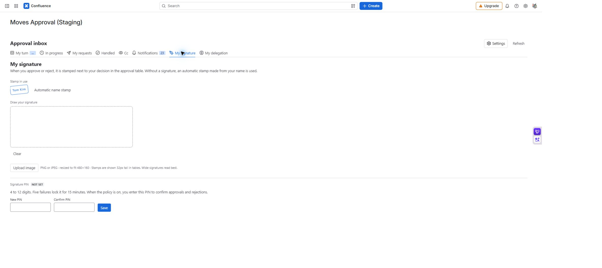

MOVES APPROVAL / 사용자 가이드
내 서명과 PIN
서명은 결정 옆에 표시할 도장을 정하고, PIN은 정책에 따라 승인·반려를 확정할 때 사용합니다. 서명 이미지 등록과 PIN 등록은 별도입니다.
경로: 승인 업무함 → 내 서명.
서명 등록하기
- 지금 쓰이는 도장을 확인합니다. 등록된 이미지가 없으면 이름 자동 도장을 사용합니다.
- 서명 그리기로 그리거나 이미지 업로드로 PNG·JPEG 파일을 고릅니다. 원본은 2MB 이하이며 자동으로 480×160 이하로 줄어듭니다.
- 미리보기에서 서명이 잘리지 않고 읽히는지 확인한 뒤 저장합니다. 실제 표에서는 높이 32px로 보이므로 가로로 긴 서명이 적합합니다.
- 저장 후 현재 도장에 반영됐는지 확인합니다. 관리자가 서명 표시를 꺼 놓으면 등록해도 결정 화면에 표시되지 않습니다.

MA-08 · 서명과 PIN은 별도로 관리합니다. 화면에는 실제 PIN 값이 표시되지 않습니다.
PIN 등록·변경하기
| 입력·동작 | 사용 방법 | 확인할 결과 |
|---|---|---|
| 새 PIN·PIN 확인 | 같은 4~12자리 숫자 입력 | 등록됨 상태를 확인합니다. |
| 현재 PIN | 기존 PIN 변경·삭제 시 입력 | 새 PIN 입력만으로 기존 PIN을 바꿀 수 없습니다. |
| PIN 삭제 | 현재 PIN 확인 후 삭제 | 필수 정책에서는 다시 등록해야 결정할 수 있습니다. |
5회 틀리면 15분 동안 잠깁니다. 계속 다른 값을 시도하지 말고 잠금 시간이 지난 뒤 확인하세요. 앱에는 관리자 PIN 초기화 기능이 없습니다. PIN을 잊었다면 사이트 관리자와 지원 채널에 처리 방법을 문의합니다.
완료 확인
현재 도장과 PIN 상태를 각각 확인합니다. 서명을 올렸다고 PIN까지 등록된 것은 아닙니다. 실제 결정 방법은 승인·반려, 문서에 보이는 도장은 결재란을 참고하세요.